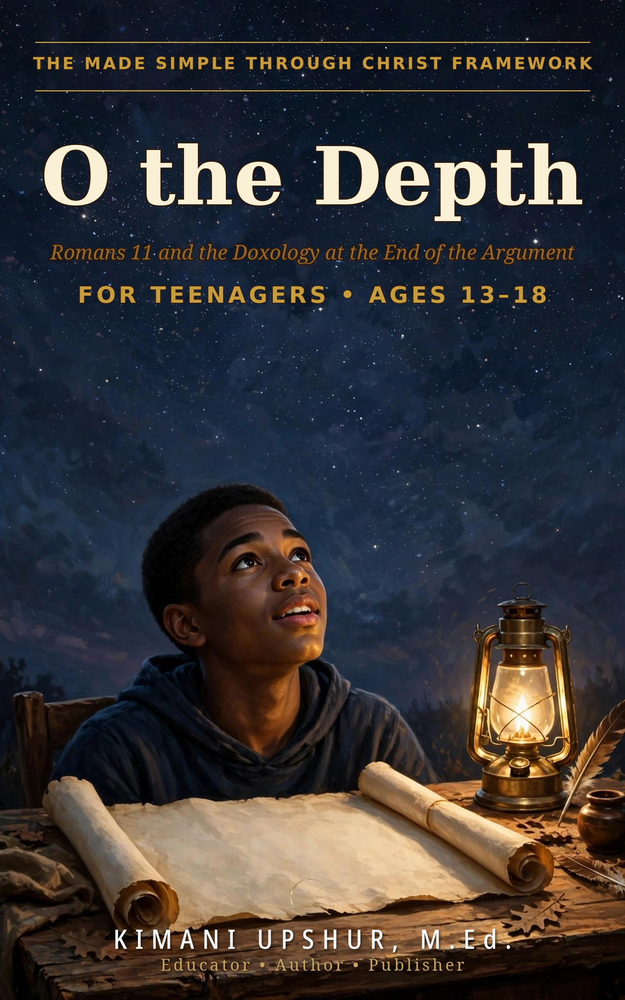

Home / Kids & Teens / Teenagers

O the Depth
Romans 11 and the Doxology at the End of the Argument
by Kimani Upshur, M.Ed.
Paul opens with the hardest question his gospel raises, stated at full size and not softened before it is answered: "Hath God cast away his people?
Paul opens with the hardest question his gospel raises, stated at full size and not softened before it is answered: "Hath God cast away his people? God forbid." O the Depth: Romans 11 and the Doxology at the End of the Argument follows Paul's reasoning through all of Romans 11, across twelve chapters — his own life as first evidence, the remnant, grace against works, the stumble that is not a fall, the olive tree, God's goodness and severity, His power to graft them in again, and the mystery at the chapter's heart: God has concluded all in unbelief, that He might have mercy upon all. The book does not pretend Romans 11 is simple, and it does not let grief be argued away: Paul writes as a son of the house, grieving for his own people and reasoning in public — the argument of Romans 11 is what love sounds like when it thinks hard. And then the argument does the most honest thing an argument can do: it kneels. "For of him, and through him, and to him, are all things: to whom be glory for ever. Amen." The shape is the lesson for a teenager: doctrine learned honestly is not finished until it is returned as worship, unanswered questions become occasions of awe instead of engines of doubt, and mercy received becomes mercy carried — to the unbelieving friend and the written-off branch. The depth is not a pond to sit beside; it is a spring, and the water runs downhill into ordinary life. For teenagers ages 13-18.
Written from a Christian worldview — Scripture first.
- Publisher
- Upshur Unlimited, LLC
- Author
- Kimani Upshur, M.Ed.
- Format
- Ebook
- List Price
- $4.99 USD
- Language
- English
- Audience
- For Teenagers • Ages 13–18
More Teenagers Books
Explore the full collection of books for teenagers.